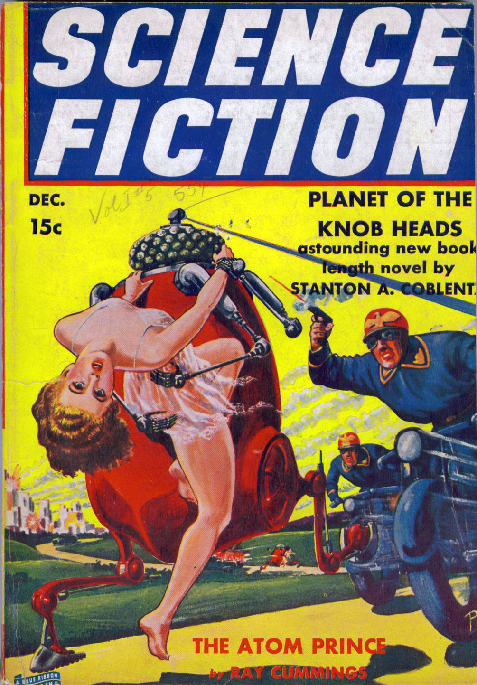

Tuesday, August the 2nd, 2011
back to: title, date or indexes
Many thanks to Ptak Science Books for bringing to our attention this cover from Science Fiction magazine, an issue containing what I feel sure is a masterpiece of storytelling by Stanton A Coblentz.
